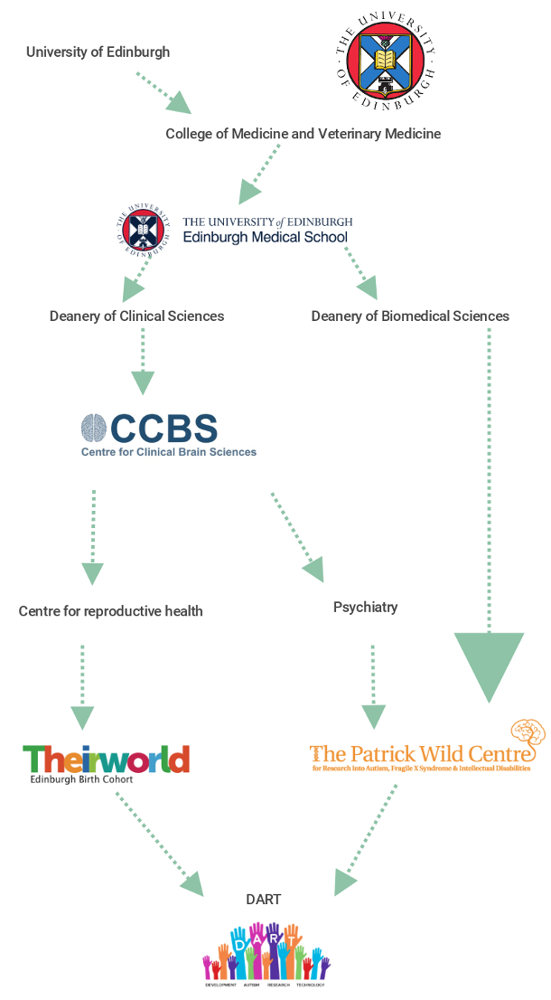

# Contacts
# Useful contacts for work: HR, Finance, postgraduate office etc.
By Sue FW
Sue Davidson: Centre Administrator for the SMRC. Sue's is your primary contact for: purchasing; participant expenses; HR & recruitment; annual leave & contracts; ethics and IRAS forms; event management & training courses; room bookings, minutes & meetings.
Salvesen Mindroom Research Centre, Child Life & Health, University of Edinburgh, Royal Hospital for Children & Young People, Edinburgh Bioquarter EH16 4TJ
Tel : 0131 312 1644
Email: Susan.Davidson@ed.ac.uk
Dawne Milligan, Research Funding Specialist, can help with costings and other preparation for funding applications.
Edinburgh Research Office, The University of Edinburgh, 9 Bioquarter, Little France Road, Edinburgh EH16 4UX
Tel: +44 (0)131 650 9034
Email: dawne.milligan@ed.ac.uk
CCBS administrative roles include those listed below [but in the first instance you should always go to Sue Davidson]
Alice Robertson is CCBS Centre Manager with responsibility for operational matters including e-expenses, e-authorisations, ad hoc costings, budgets, post-award grant changes and general enquiries. Email: alice.robertson@ed.ac.uk
Caroline MacDonald is an Administrator based in Psychiatry who can help with enquiries relating to budgets and operational expenditure - purchase orders, SciQuest orders, suppliers, invoices, eITs and payments. Email: caroline.macdonald@ed.ac.uk
Dorothy Air is the CCBS HR Assistant. Email: dorothy.air@ed.ac.uk
Sharon Moncrieff is the CCBS Postgraduate Administrator (covering for Charlotte Iliakis's maternity leave until July). Email: sharon.moncrieff@ed.ac.uk
Fiona Stephens is a CCBS Administrator with a remit covering PURE accounts. Email: fiona.stephens@ed.ac.uk. Ann Ross [via ccb s-openaccess@ed.ac.uk] will upload publications to PURE to comply with open access regulations.
# Useful mailing lists / journal clubs you might want to join
By Sue FW
[needs content]
# Understanding research groupings at the University
By Sinéad O'Carroll

# Key people who work in Kennedy Tower
By Sue Davidson
Prof Daniel Smith - Head of Division of Psychiatry [d.smith@ed.ac.uk]
Bethany Anderson - PA to Head of Division [Bethany.Anderson@ed.ac.uk]
Prof Sue Fletcher-Watson - Professor of Developmental Psychology, Director of Salvesen Mindroom Research Centre [Sue.Fletcher-Watson@ed.ac.uk]
Dr Andrew Stanfield - Senior Clinical Research Fellow, Director of Patrick Wild Centre [Andrew.Stanfield@ed.ac.uk]
Dr Andrew McKechanie - Senior Clinical Research Fellow, Hon Consultant Psychiatrist [andrew.mckechanie@ed.ac.uk]
Prof Stephen Lawrie - Chair of Psychiatry and Neuro-imaging [s.lawrie@ed.ac.uk]
Prof Andrew McIntosh - Chair of Biological Psychiatry [andrew.mcintosh@ed.ac.uk]
Dr Catherine Crompton - Chancellor's Fellow [Catherine.Crompton@ed.ac.uk]
Dr Alyssa Alcorn - Postdoctoral Research Fellow [A.Alcorn@ed.ac.uk]
Helen Corby - Research Fellow [dcorby@exseed.ed.ac.uk]
Sue Davidson - Research Co-ordinator [susan.davidson@ed.ac.uk]
Caroline MacDonald - Administrator [caroline.macdonald@ed.ac.uk]
Alix Wilkinson - Servitor [A.Wilkinson@ed.ac.uk]
Patrice Delfils - Servitor [Patrice.Delfils@ed.ac.uk]
# A list of nice places to go nearby
By Lorna Ginnell
We are super lucky to be situated in an area with a great selection of cafés and eateries! Here are some gems:
- For breakfast or coffee meetings: Project Coffee (warning, no Wi-Fi!), Soderberg
- For those days in the office when you need a pick me up and instant coffee just won't do: The Counter (Kiosk next to M&S), Twelve Triangles
- For when you want to escape from the office but don't want to go too far: The Round Square, Blackwood Coffee, Café Nero
- The best sandwiches: Karine's Deli
- Grab and go lunches: M&S, Waitrose (they also have a Sushi Bar)
- A quiet place to do some solo work: Redbox (in Marchmont). OK so this is like half an hour away but it's really spacious, not too busy and has lots of plugs and free Wi-Fi! And good coffee and sweet treats. So a nice place to settle in and write for the day.
- For dreamy breakfasts when you're not planning on doing any work: Honeycomb and Co
- After work drinks: The Hermitage, Montpelier, Black Ivy
- Dinner: Montpelier, Mia's Italian
- Walks: The Braid & Blackford Hill, Bruntsfield Links
# Useful contractors
# Graphic Design
http://scottmcallisterdesign.co.uk (opens new window) -- recommended though not used yet, an autistic graphic designer in Scotland.
David Roberts (designroute.hello@gmail.com) has done some graphic design work for Catherine before (happy to share examples). He's a registered supplier at the University so easy to pay, and happy to do small bits of graphic design work - many of the other University registered suppliers only take on bigger jobs.
# Transcription
By Catherine Crompton
Lesley @ e-transcribing (info@e-transcribing.co.uk). Local transcriber used before to transcribe confidential interviews both by Patrick Wild Centre and the School of Education. Lesley lives in Edinburgh and does not work during school holidays (including over the summer holidays), and in 2018 charged £1/minute of tape to transcribe.